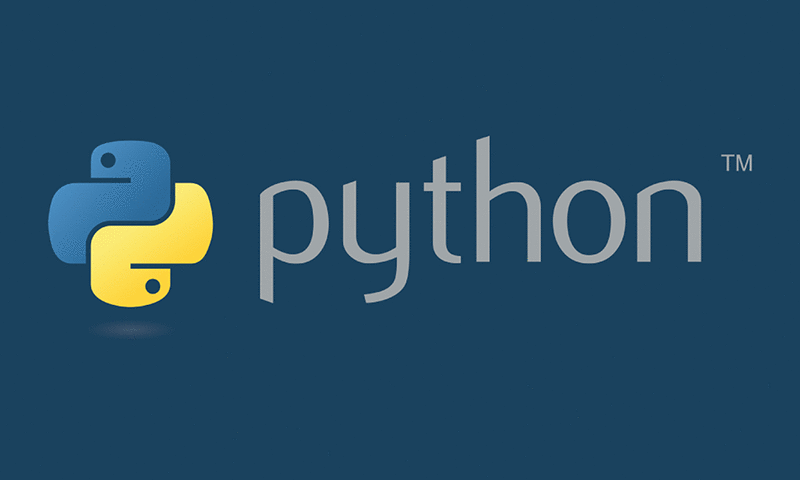

Python And Its Uses
What is Python
Programming is what can be described as the backbone of everything today. Everything you use, from video games, to websites on the internet, to apps on your phone, all of them can be linked back to programming. A general computer consists of 2 parts - hardware and software. Hardware are the physical, tangible components of a computer that control the specifc processes of the computer. For example, a video card helps enable videos to be displayed on a monitor - another hardware device that allows images and text to be displayed to the user. The core of it all - the computer's CPU takes data inputted by the user, processes that into information using instructions fed in through the RAM. This information is then outputted into the computer. But how does it do this? That is where software comes in. Software is like the glue that holds everything together. It tells the hardware what to do, and it coordinates all the different processes together, so they work harmoniously, without failing. And programmers, the wizards of the computer, they are the ones that write this software that allow people to run applications and do tasks, as well as coordinate with the hardware.
Python is one types of programming. It is a general purpose programming language. Machines only understand simple binary, i.e., 0 and 1. It cannot understand words like we do. So we need top "speak" to the computer, and we do so using special commands and keywords through various types of programming languages. Python is one of them that has no specified prupose. For example, Javascript is used for web apps, SQL is used to build databases, but Python is general purpose. This means that it can be used for anything. From drawing graphs and plots to study scientific data, to creating simulations in the lab, to creating complex machine learning algorthms, and even to create web servers, Python can serve it all. As compared to languages like Java, Python is a little less powerful, but is still robust and easy to use.
What are some uses of Python?
Being a general purpose language, Python has several uses. A lot of programmers use it for writing machine learning and AI software, because of several modules written in Python (more on modules later). Other than than, Python can be used for just about anything. A lot of scientists and mathematicians use it to build simulations for experiments too dangerous to carry out, or to plot graphs of complex equations to observe changes. It can be used in data monitoring systems, to control different receptors and actuators. It can be used in a lot of other STEM fields as well. For example, Python can be used to write an expert system for doctors to help understand and diagnose patients. As for economics and business, Python can be used to create algorithms for Fintech, to trade on the market efficiently. Additionally, it can be used to code video games and web servers.
However, it is not limited to just STEM and economics streams. Python is a life skill. Programming in general is a life skill. With the future, which will be equipped with more technology, we need to understand how to use it. But more importantly, programming teaches you logic, it teaches you how to think. It teaches you how to identify patterns, how to approach understanding things in different ways. Rather than a straightforward approach to thinking, programming lets you think of different parallel solutions to the same problem, which is essential to learn in your daily life.
Next: Basic Python Syntax